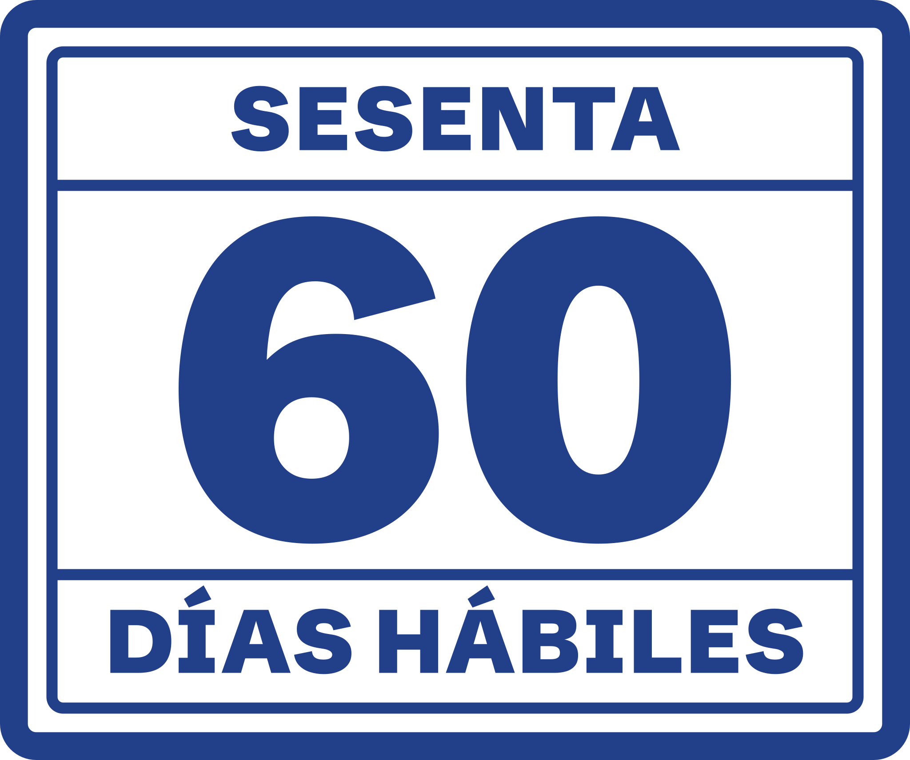

Sesenta · pliego de identidad
CONCEPTO DE SPINDLELAB · SESENTA NO EXISTELogo la palabra y el sello


SESENTA en Schibsted Grotesk 900 y el 60 como timbre de doble filete, como el de cargo que deja la oficina de partes. Sobre el azul va en blanco; sobre el papel, en tinta azul y torcido, como cae un timbre de goma. A 32 y 16 px queda el 60 solo.
Color cinco, con un rol cada uno
#22408A9,68:15,66:18,57:1#F3F1EA16,71:1El rubro se viste de marino y dorado; el cliente de este estudio va al trabajo de azul. El azul es el lienzo, y una sarga hecha con CSS le da la trama de la tela. El papel y la tinta aparecen solo cuando hay un documento en pantalla. El azul vuelve sobre el papel una sola vez: como tinta del timbre.
Letra dos familias, una para cada cosa
60
Schibsted Grotesk 900 · la marca y el númeroTienes 60 días hábiles
800 · títulosQué artículo dice tu carta
400 · lecturaSe cuentan de lunes a sábado, sin domingos ni feriados.
EN LO PRINCIPAL: qué hacer hoy.
PRIMER OTROSÍ: cuántos días te quedan.
Courier Prime, solo dentro de un documento: la carta, el finiquito, la hoja de la primera reunión, la suma. Las dos con licencia OFL 1.1, servidas desde la carpeta de la pieza.
Recurso propio el 60 que baja y la suma del escrito
60
47
35
EN LO PRINCIPAL: qué hacer hoy.
PRIMER OTROSÍ: cuántos días te quedan.
SEGUNDO OTROSÍ: qué dice tu carta.
TERCER OTROSÍ: antes de firmar el finiquito.
Quien llega trae dos cosas: una fecha y una carta. La fecha se vuelve el número: pones el día en que dejaste de trabajar y el 60 baja, cifra por cifra, hasta los días hábiles que te quedan (art. 168, de lunes a sábado). La carta se vuelve la manera de titular: cada sección es un otrosí, como en un escrito.
Concepto de SpindleLab, 2026. Sesenta no existe; sus abogados tampoco.Contrastes medidos con la fórmula de WCAG 2.1 · ficha.md §4